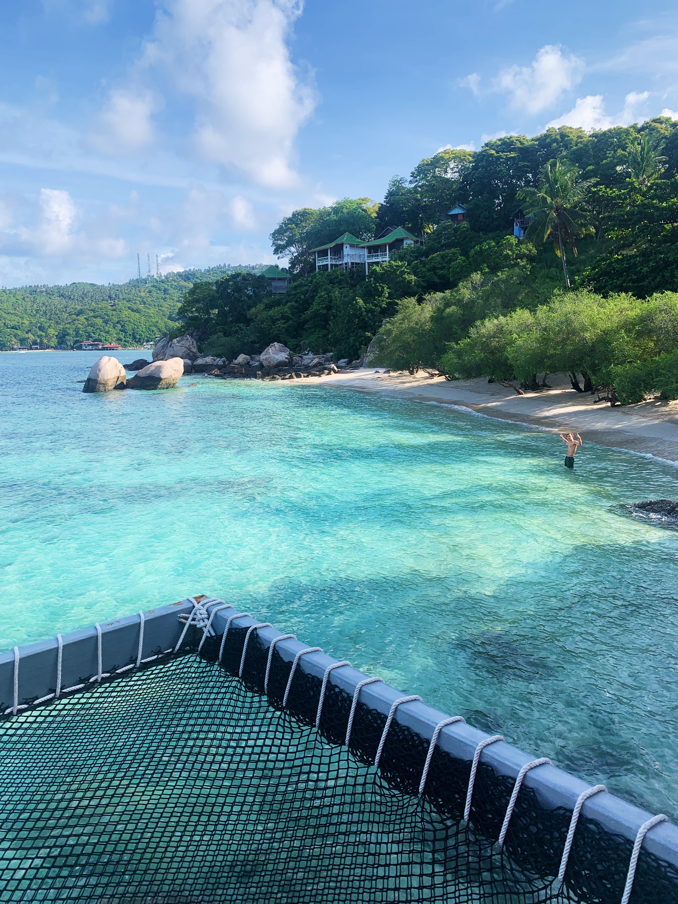
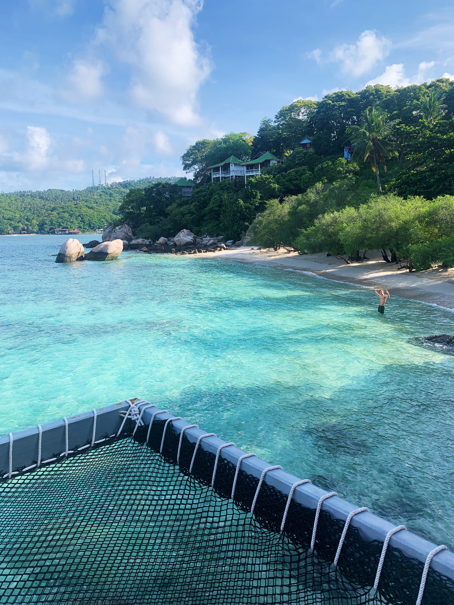

Koh Tao
We beginnen met de meest bijzondere plek op aarde.
Ik overdrijf niet als ik dit zeg. Ik ben in mijn 2 maanden reizen 3 keer terug geweest naar deze geweldige plek. Koh Tao was mijn tweede bestemming die ik ging bezoeken. Ik was al snel verliefd geworden op dit eiland.

 

In mijn tussenjaar had ik de tijd om te reizen. En ik wilden hier ook zeker gebruik van gaan maken. Ik ben een jaar blijven zitten en ik heb het eerste half jaar van mijn tussenjaar een best heftige periode achter de rug gehad. Hierdoor was mijn droom nog groter geworden. Ik wil weg hier en de wereld zien.
In januari heb ik een scooter ongeluk gehad waarbij ik veel schade had opgelopen. Veel gebroken en gekneusd en eigenlijk lag ik er als een kasplantje bij voor minimaal een maand. De meest langdurige schade waren de heftige hersenschuddig en mijn tanden die waren afgebroken. Mijn twee voortanden zijn ook afgestorven en waarvoor ik nu in de plaats mijn implantaten heb.
Ik heb nu nog steeds te maken met de implantologie voor mijn tanden. Een aantal operaties verder maar ik heb er wel het een en ander aan overgehouden. Maar mijn droom om weg te gaan werd zo voor m'n ogen weggenomen. Dit is natuurlijk heel moeilijk geweest.
Maar om het een positieve kant op te draaien ben ik dus wel uiteindelijk gaan reizen. Op dat moment voelde reizen echt als de enige oplossing. Mijn reis is door Thailand geweest. Heerlijk met mijn backpack op mijn rug ben ik in m'n eentje op veel plekken geweest. Ja je hoort het goed, in m'n eentje